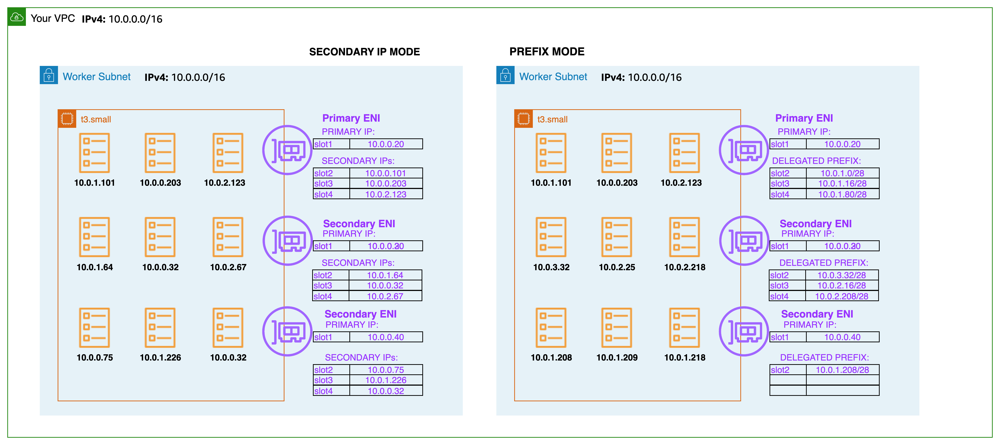

Linux용 Prefix 모드¶
Amazon VPC CNI는 Amazon EC2 네트워크 인터페이스에 네트워크 Prefix를 할당하여 노드에 사용 가능한 IP 주소 수를 늘리고 노드당 파드 밀도를 높입니다. Amazon VPC CNI 애드온 버전 1.9.0 이상을 구성하여 네트워크 인터페이스에 개별 보조 IP 주소를 할당하는 대신 IPv4 및 IPv6 CIDR을 할당할 수 있습니다.
IPv6 클러스터에서는 Prefix 모드만 지원되며 기본적으로 활성화되어있습니다. VPC CNI는 ENI의 슬롯에 /80 IPv6 Prefix를 할당합니다. 이 가이드의 IPv6 섹션을 참조합니다.
Prefix 할당 모드에서 인스턴스 유형당 최대 elastic network interfaces 수는 동일하게 유지되지만, 네트워크 인터페이스의 슬롯에 개별 IPv4 주소를 할당하는 대신 /28(16개의 IP 주소) IPv4 주소 Prefix를 할당하도록 Amazon VPC CNI를 구성할 수 있습니다. ENABLE_PREFIX_DELEGATION이 true로 설정되면 CNI는 ENI에 할당된 Prefix에서 파드에 IP 주소를 할당합니다. EKS 사용자 가이드에 나와 있는 안내를 따라 Prefix IP 모드를 활성화합니다.

네트워크 인터페이스에 할당할 수 있는 최대 IP 주소 수는 인스턴스 유형에 따라 다릅니다. 네트워크 인터페이스에 할당하는 각 Prefix는 하나의 IP 주소로 간주합니다. 예를 들어, c5.large 인스턴스의 네트워크 인터페이스당 IPv4 주소는 10개로 제한됩니다. 이 인스턴스의 각 네트워크 인터페이스에는 기본 IPv4 주소가 있습니다. 네트워크 인터페이스에 보조 IPv4 주소가 없는 경우 네트워크 인터페이스에 최대 9개의 Prefix를 할당할 수 있습니다. 네트워크 인터페이스에 할당한 각 추가 IPv4 주소의 경우 네트워크 인터페이스에 접두사를 하나 더 적게 할당할 수 있습니다. 인스턴스 유형별 네트워크 인터페이스당 IP 주소 및 네트워크 인터페이스에 Prefix 할당에 대한 AWS EC2 설명서를 참조합니다.
워커 노드를 초기화하는 동안 VPC CNI는 기본 ENI에 하나 이상의 Prefix를 할당합니다. CNI는 웜 풀을 유지 관리하여 파드 시작 속도를 높이기 위해 Prefix를 미리 할당합니다. 환경 변수를 설정하여 웜 풀에 보관할 Prefix 수를 제어할 수 있습니다.
WARM_PREFIX_TARGET, 현재 필요 수량을 초과하여 할당할 Prefix 수WARM_IP_TARGET, 현재 필요 수량을 초과하여 할당할 IP 주소 수MINIMUM_IP_TARGET, 언제든지 사용할 수 있는 최소 IP 주소 수WARM_IP_TARGET및MINIMUM_IP_TARGET이 설정된 경우WARM_PREFIX_TARGET를 오버라이드 합니다.
더 많은 파드가 예약되면 기존 ENI에 대해 추가 Prefix가 요청됩니다. 먼저 VPC CNI는 기존 ENI에 새 Prefix를 할당하려고 시도합니다. 만약 ENI의 용량이 부족할 경우, VPC CNI는 노드에 새 ENI를 할당하려고 시도합니다. 최대 ENI 한도(인스턴스 유형별로 정의)에 도달할 때까지 새 ENI가 연결됩니다. 새 ENI가 연결되면 ipamd는 WARM_PREFIX_TARGET, WARM_IP_TARGET 및 MINIMUM_IP_TARGET 설정을 유지하는 데 필요한 하나 이상의 Prefix를 할당합니다.

권장 사항¶
다음과 같은 경우 Prefix 모드 사용¶
워커 노드에서 Pod 밀도 문제가 발생하는 경우 Prefix 모드를 사용합니다. VPC CNI 오류를 방지하려면 Prefix 모드로 마이그레이션하기 전에 서브넷에서 /28 Prefix의 연속된 주소 블록이 있는지 확인할 것을 권장합니다. 서브넷 예약에 대한 세부 정보는 “서브넷 예약을 사용하여 서브넷 파편화 (IPv4) 방지” 섹션을 참조합니다.
이전 버전과의 호환성을 위해 max-pods 제한이 보조 IP 모드를 지원하도록 설정되었습니다. 파드 밀도를 높이려면, max-pods 값을 Kubelet에 지정하고, 노드의 사용자 데이터(User data)에 --use-max-pods=false를 지정합니다. max-pod-calculator.sh 스크립트를 사용하여 특정 인스턴스 유형에 대한 EKS의 권장 최대 파드 수를 계산하는 것을 고려해 볼 수 있습니다. 사용자 데이터의 예는 EKS 사용자 가이드를 참조합니다.
./max-pods-calculator.sh --instance-type m5.large --cni-version ``1.9``.0 --cni-prefix-delegation-enabled
Prefix 할당 모드는 기본 ENI가 파드에 사용되지 않는 CNI 커스텀 네트워킹 사용자에게 특히 적합합니다. Prefix 할당을 사용하면 파드에 기본 ENI를 사용하지 않아도 거의 모든 Nitro 인스턴스 유형에서 더 많은 IP를 연결할 수 있습니다.
다음과 같은 경우에는 Prefix 모드를 권장하지 않음¶
서브넷이 매우 파편화 되어 있고 사용 가능한 IP 주소가 부족하여 /28 Prefix를 만들 수 없는 경우에는 Prefix 모드를 사용하지 마십시오. Prefix가 생성되는 서브넷이 파편화 된 경우(사용량이 많고 보조 IP 주소가 흩어져 있는 서브넷), Prefix 연결에 실패할 수 있습니다. 신규 서브넷을 만들고 Prefix를 예약하면 이 문제를 피할 수 있습니다.
Prefix 모드에서는 워커 노드에 할당된 보안 그룹이 파드에 공유됩니다. 공유 컴퓨팅 리소스에서 다양한 네트워크 보안 요구사항이 있는 애플리케이션을 실행하여 규정 준수를 달성해야 하는 보안 요구사항이 있는 경우 파드의 보안 그룹을 사용하는 것을 고려합니다.
동일한 노드 그룹에서 유사한 인스턴스 유형 사용¶
노드 그룹에는 여러 유형의 인스턴스가 포함될 수 있습니다. 최대 파드 수가 적은 인스턴스의 값이 노드 그룹의 모든 노드에 적용됩니다. 노드 사용을 극대화하려면 노드 그룹에서 유사한 인스턴스 유형을 사용하는 것이 좋습니다. 노드 오토스케일링을 위해 Karpenter를 사용하는 경우 provisioner API의 requirements 부분에서 node.kubernetes.io/instance-type을 구성할 것을 권장합니다.
Warning
특정 노드 그룹의 모든 노드에 대한 최대 파드 수는 노드 그룹 내 단일 인스턴스 유형의 최소 최대 파드 수로 정의됩니다.
IPv4 주소를 보존하도록 'WARM_PREFIX_TARGET'을 구성¶
설치 매니페스트의 WARM_PREFIX_TARGET 기본값은 1입니다. 대부분의 경우, WARM_PREFIX_TARGET의 권장 값인 1을 사용하면 인스턴스에 할당된 미사용 IP 주소를 최소화하면서 빠른 파드 시작 시간을 적절히 조합할 수 있습니다.
노드당 IPv4 주소를 추가로 보존해야 하는 경우 구성 시 WARM_PREFIX_TARGET을 오버라이드하는 WARM_IP_TARGET 및 MINIMUM_IP_TARGET 설정을 사용합니다. WARM_IP_TARGET을 16 미만의 값으로 설정하면 CNI가 초과 Prefix 전체를 연결하지 않도록 할 수 있습니다.
신규 ENI 추가보다는 신규 Prefix 할당¶
EC2 API 작업 시 기존 ENI에 Prefix를 추가로 할당하는 것이 신규 ENI를 생성하여 인스턴스에 연결하는 것보다 더 빠릅니다. Prefix를 사용하면 IPv4 주소 할당을 절약하면서 성능을 향상시킬 수 있습니다. Prefix 연결은 일반적으로 1초 이내에 완료되지만 신규 ENI를 연결하는 데에는 최대 10초가 걸릴 수 있습니다. 대부분의 사용 사례에서 CNI는 Prefix 모드에서 실행할 때 워커 노드당 하나의 ENI만 필요로합니다. (최악의 경우)노드당 최대 15개의 미사용 IP를 감당할 수 있다면, 최신 Prefix 할당 네트워킹 모드를 사용하여 그에 따른 성능 및 효율성 향상을 실현하는 것을 권장합니다.
서브넷 예약을 사용하여 서브넷 파편화 (IPv4) 를 방지¶
EC2가 ENI에 /28 IPv4 Prefix를 할당할 경우, 해당 Prefix는 서브넷의 연속된 IP 주소 블록이어야 합니다. Prefix가 생성되는 서브넷이 파편화된 경우 (보조 IP 주소가 흩어져 있고 많이 사용되는 서브넷) Prefix 연결에 실패할 수 있으며 VPC CNI 로그에 다음과 같은 오류 메시지가 표시됩니다.
failed to allocate a private IP/Prefix address: InsufficientCidrBlocks: There are not enough free cidr blocks in the specified subnet to satisfy the request.
파편화를 방지하면서 Prefix를 생성할 수 있는 충분한 연속 공간을 확보하려면 VPC 서브넷 CIDR 예약을 사용하여 Prefix만 사용할 수 있도록 서브넷 내 IP 공간을 예약할 수 있습니다. 예약을 생성하면 VPC CNI 플러그인은 EC2 API를 호출하여 예약된 공간에서 자동으로 할당되는 Prefix를 할당합니다.
신규 서브넷을 만들고, Prefix를 위한 공간을 예약하고, VPC CNI를 사용하여 해당 서브넷에서 실행 중인 워커 노드에 Prefix를 할당하도록 설정하는 것을 권장합니다. 신규 서브넷이 VPC CNI Prefix 할당을 활성화한 상태에서 EKS 클러스터에서 실행되는 파드 전용으로 사용되는 경우, Prefix 예약 단계를 건너뛸 수 있습니다.
VPC CNI 다운그레이드를 피할 것¶
Prefix 모드는 VPC CNI 버전 1.9.0 이상에서 작동합니다. Prefix 모드를 활성화하고 Prefix를 ENI에 할당한 후에는 Amazon VPC CNI 추가 기능을 1.9.0 미만 버전으로 다운그레이드하지 않아야 합니다. VPC CNI를 다운그레이드하려면 노드를 삭제하고 다시 생성해야 합니다.
Prefix Delegation으로 전환하는 동안 모든 노드를 교체¶
기존 워커 노드를 순차적으로 교체하는 대신 신규 노드 그룹을 생성하여 사용 가능한 IP 주소 수를 늘리는 것을 권장합니다. 기존 노드를 모두 차단하고 drain하여 모든 기존 파드를 안전하게 제거합니다. 서비스 중단을 방지하려면 중요한 워크로드를 위해 프로덕션 클러스터에 Pod Disruption Budgets을 설정하는 것을 권장합니다. 신규 노드의 파드에는 ENI에 할당된 Prefix의 IP가 할당됩니다. 파드가 실행되고 있는지 확인한 후, 기존 노드와 노드 그룹을 삭제할 수 있습니다. 관리형 노드 그룹을 사용하는 경우, 설명된 단계에 따라 안전하게 노드 그룹 삭제를 진행합니다.